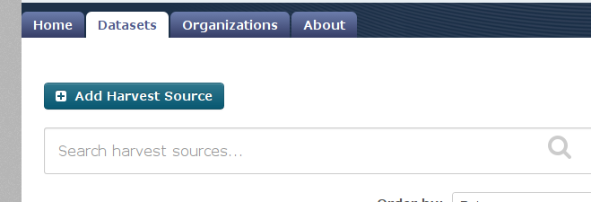
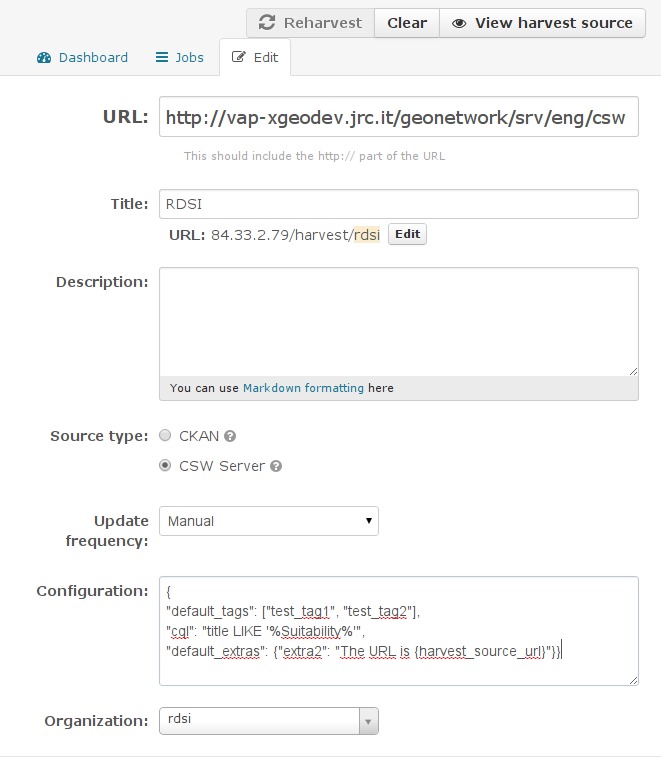

Adding an harvesting source
In order to add an harvesting source, you need to log into CKAN web interface as an administrator.
You have to type the address for the harvesting page, since there is no direct link for it

Press the “Add Harvest Source” button and this page will open:

In order to add properly a CSW source you’ll have to set:
- The CSW URL endpoint
- A title/name for this source, for your reference
- The harvest type, i.e. “CSW Server” in “Source type”
- The update frequency
- An optional configuration in JSON format.
- The owner Organization: all the dataset harvested from this source will be assigned to that Organization.
The JSON configuration allows these parameters:
- cql: a CQL filter for harvesting only a subset of the records in the remote node
- default_tags: all dataset harvested from this source will have these tags attached.
- default_extras: all dataset harvested from this source will have these key/value pairs attached.
The value may have tokens in the form {token}, where the allowed tokens are:
- harvest_source_url
- harvest_source_title
- harvest_job_id
- harvest_object_id
Note
default_tags and default_extras will be available only if, when installing ckanext-spatial, these commits
have been included manually:
https://github.com/ckan/ckanext-spatial/pull/58